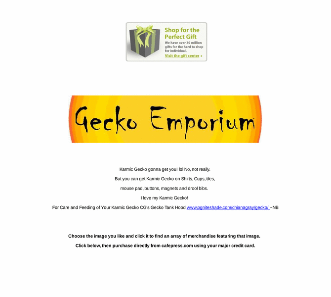

Previewing: GECKO EMPORIUM Previewing: GECKO EMPORIUM 
Use the left/right red arrow controls to navigate through this ring - Click the preview image to visit the member site.

GECKO EMPORIUM Karmic Gecko gonna get you! lol No, not really. But you can get Karmic Gecko on Shirts, Cups, tiles, mouse pad, buttons, magnets and drool bibs.
GECKO EMPORIUM owned by:
 putativefact putativefact
A member of the original webring since 07/17/2005.
|
|